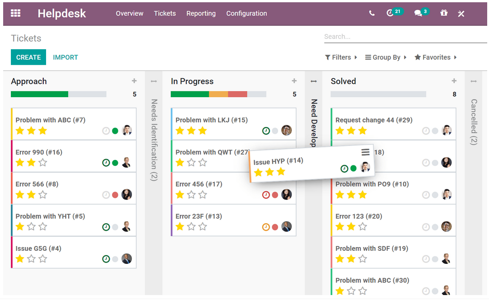
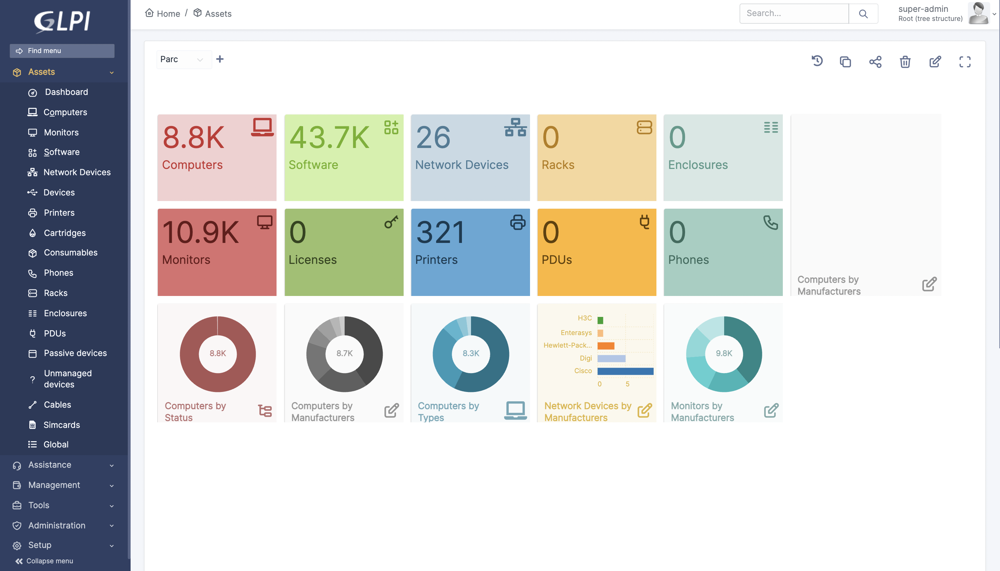
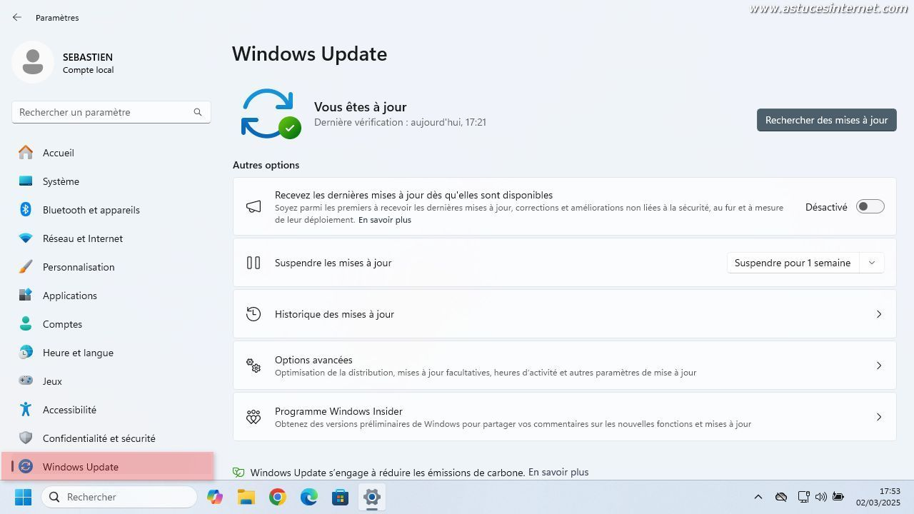

Support Infrastructure
1. Contexte & objectifs
L'objectif est de proposer un support continu et le plus disponible possible à l'ensemble des utilisateurs du groupe, sur tout type de problématique
Acteurs impliqués : utilisateurs du groupe (toutes sociétés confondues), équipe SI : Pôle Infrastructure.
Contraintes : maintenir un service le plus disponible possible, gérer les urgences sans interrompre les tâches de fond, composer avec un parc hétérogène et la multitude de spécifications des different postes (notamment des les usines).
2. Tâches réalisées & évolution
- Mission 1 : Support basique (niveau 1) ? : traitement des tickets simples (mots de passe, accès partagés, périphériques).
- Mission 2 : Support avancé (niveau 2) ?:
- Mission 3 : Support en urgent / en direct :
- Mission 4 : Gestion de la "petite" demande :
3. Compétences & apprentissages critiques mobilisés
Cette mission, transverse et continue, mobilise principalement les compétences RT1 (administration réseaux) et RT2 (relation usagers).
RT1 Administrer les réseaux et l'Internet – Niveau 2
Justification : la préparation des postes, la migration Windows 11 et le diagnostic d'incidents quotidien me font installer, configurer, dépanner des postes clients dans un environnement de production.
RT2 Connecter les entreprises et les usagers – Niveau 1/2
Justification : le support exige d'adapter mon discours technique à des utilisateurs de profils variés (administratifs, terrain, direction) – pédagogie, vulgarisation, écoute.
4. Analyse réflexive & autoévaluation
Ce que j'ai appris : j'ai développé mon sens du relationnel et compris l'importance de la communication et de la pédagogie avec les utilisateurs. J'ai également appris à structurer le processus de préparation des postes et de migration vers Windows 11 pour minimiser l'impact sur la productivité des collaborateurs.
Difficultés rencontrées : la gestion des priorités a été un défi majeur, notamment pour concilier le support quotidien (souvent urgent) avec les tâches de fond comme la migration des OS. J'ai également dû faire face à diverses problématiques de compatibilité matérielle et logicielle (ex : prérequis TPM 2.0 pour Windows 11).
Comment je les ai surmontées : [À COMPLÉTER : ex. mise en place d'un mini-tableau de priorisation des tickets, échanges réguliers avec le tuteur pour valider les arbitrages.]
Positionnement personnel : je suis aujourd'hui capable de diagnostiquer rapidement des pannes variées sur les postes de travail et d'accompagner sereinement les utilisateurs. Mon objectif à venir est d'automatiser davantage la préparation des postes (mastering) pour gagner en efficacité et fiabilité.
5. Traces & preuves
Illustrations sélectionnées de mes interventions quotidiennes de support et de gestion de parc. Chaque trace a été retenue parce qu'elle illustre concrètement une compétence du référentiel.

1. Résolution d'incidents. Illustre AC11.05 (identifier les dysfonctionnements) et AC12.05 (communication avec l'utilisateur).

2. Préparation des équipements. Illustre AC11.06 (installer un poste client) et AC21.03 (déployer des postes clients).

3. Migration Windows 10 → 11. Illustre AC11.04 (maîtrise des systèmes d'exploitation) et AC21.03 (déploiement de postes).
4. Intégration de la fonctionnalité salle de réunion dans Google Workspace. Illustre AC12.04 (utilisation des outils collaboratifs) et AC21.03 (déploiement de postes).